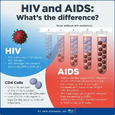
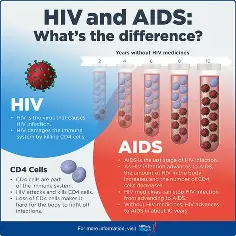

HIV Prevention Breakthrough
The innovative drug, Lenacapavir, is leading the charge in HIV prevention, showcasing unprecedented success and opening doors to a revolution in global healthcare practices.
Read More → Welcome to the ultimate hub combining groundbreaking discoveries, fascinating facts, and historical narratives—all in one immersive experience.
The innovative drug, Lenacapavir, is leading the charge in HIV prevention, showcasing unprecedented success and opening doors to a revolution in global healthcare practices.
Read More → Scientists have recently celebrated a milestone in renewable energy—demonstrating that innovation in sustainable technologies is rapidly transforming our approach to climate change.
Read More →Modern AI is revolutionizing industries; from healthcare to transport, breakthrough algorithms now drive smarter, more efficient systems across the globe.
Read More →Dive deep into the methodologies of modern research, uncovering experimental designs, statistical breakthroughs, and future projections that paint the next decade of scientific progress.
Researchers have successfully mapped 140,000 neurons within the fruit fly brain, unlocking new frontiers in understanding complex neural networks and the intricacies of human cognition.
Read More →NASA's latest detection of a super-Earth in the habitable zone has ignited exhilarating discussions on extraterrestrial life and the possibility of future human colonization in the vast reaches of our galaxy.
Read More →A recent quantum advancement is set to revolutionize data processing speeds, paving the way for unprecedented AI applications and reimagining how we interact with technology on a granular level.
Read More →Step into the rich legacy of Aayi Mandapam—a monument of cultural heritage where tradition meets artistry. Discover the nuances of its history, its role in regional narratives, and how it continues to inspire creativity.
Read More →Since the dawn of human civilization, technology has played a pivotal role in shaping societies, improving daily life, and advancing scientific knowledge. From the earliest tools crafted from stone to the architectural marvels that still stand today, historical technological developments laid the foundation for modern innovation.
Ancient civilizations such as the Egyptians, Romans, and Mesopotamians mastered engineering techniques that enabled the construction of massive architectural wonders. The Egyptians developed pulley systems to transport enormous stones for pyramids, while the Romans pioneered aqueducts and road networks that facilitated urban expansion and trade.
Early scholars explored astronomy, mathematics, and medicine, applying their findings to practical innovations. The Babylonians devised one of the first numerical systems, the Greeks contributed advancements in geometry and physics, and ancient Indian scholars developed extensive medical texts that informed early surgical techniques.
The invention of written language transformed human communication, leading to the development of scrolls, manuscripts, and early printing techniques. The Chinese pioneered paper and early printing methods, which later influenced global literacy and the preservation of historical records.
These ancient technological advancements formed the foundation of modern civilization. Engineering principles used in ancient structures still inspire architects today, scientific discoveries laid the groundwork for contemporary research, and communication technologies evolved to shape the digital world we now inhabit.
Deploying your website on GitHub Pages? Discover tips on resolving common issues like file case sensitivity, broken links, and cache-related hiccups that can keep your site hidden from eager viewers.
Read More →Learn how to integrate modern design elements, animations, and responsive layouts with GitHub Pages. Whether you’re a beginner or a seasoned developer, these strategies will help elevate your web projects effectively.
Read More →If you have questions, ideas, or feedback about our content, please feel free to get in touch using the form below. We love engaging with curious minds!